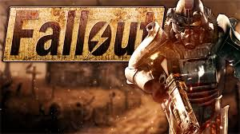

"I used to envy 'em that. I wanted a life of adventure, but I stayed here and took over as mayor when my dad died. Been running this place and building NCR ever since. Guess it turned out to be a pretty big life after all."
"The water flask is a relic of the vaults. In Fallout the Vault Dweller is given three flasks if the Outdoorsman skill is tagged. At the beginning of Fallout 2 the Chosen One is given a flask from Vault 13,"
"War. War never changes.The Romans waged war to gather slaves and wealth.Spain built an empire from its lust for gold and territory.Hitler shaped a battered Germany into an economic superpower.But war never changes."
"In the Vault Dweller's Survival Guide, Brian Fargo stated that the game had no marketing campaign. Instead, he encouraged the fans to give direct feedback about their games on Interplay's website.[11] The Fallout Demo was released on April 26, 1997."
"GameSpot gave it an 8.7 and praised the game, but found some aspects of it clunky, feeling, "interaction with nonplayer characters (NPCs) is a bit disappointing. Most of the nonplayer characters in Fallout aren't big on conversation and run around blithely and inconsequentially." They also found some of the NPC companion mechanics frustrating, mentioning, "Unfortunately, these NPC companions tend to take particular delight in blocking doorways or shooting you (and each other) in the back with semiautomatic weapons."